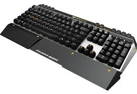

Gama Premium
Reseña: Titan Force Pro
El Titan Force Pro es la definición de un teclado "tanque". Construido con materiales de grado industrial, este teclado está pensado para ser el centro de mando de tu setup por años.
Puntos Fuertes:
- Switches Cherry MX Blue: el estándar de oro en feedback táctil y sonoro.
- Reposamuñecas magnético de piel sintética premium incluido.
- Passthrough USB: puerto adicional en el teclado para conectar tu mouse o pendrive.
Debilidades:
- Precio elevado en comparación con marcas emergentes.
- Requiere dos puertos USB-A en la PC para usar el passthrough.
¿Buscas lo mejor de lo mejor?
El Titan Force Pro es la inversión definitiva para tu productividad y juego.
Especificaciones Técnicas
| Formato | Full Size + Teclas Macro |
|---|---|
| Switches | Cherry MX Blue (Táctiles/Clicky) |
| Material | Aluminio de Grado Aeronáutico |
| Keycaps | PBT Double-shot |
| Extras | Rueda de volumen, USB Passthrough |
Análisis Detallado
El Titan Force Pro no hace concesiones. Desde el primer momento que lo tocas, la frialdad del aluminio aeronáutico te indica que estás ante un producto de gama alta. Es pesado, estable y extremadamente gratificante de usar.
Switches y Feedback: Los Cherry MX Blue originales proporcionan ese "click" icónico que muchos aman para escribir. Aunque pueden ser ruidosos, la precisión que ofrecen es inigualable, minimizando los errores de pulsación accidental.
Ergonomía de Lujo: A diferencia de los reposamuñecas de plástico duro, el que incluye el Titan Force Pro es acolchado y se une al teclado mediante potentes imanes, lo que permite quitarlo y ponerlo en un segundo según tu preferencia.